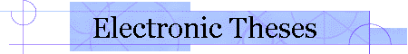

|
 About | Browse | Search | Caltech Student Instructions |
Type of Document Dissertation Author Caughey, Thomas Kirk URN etd-04072003-115022 Persistent URL http://resolver.caltech.edu/CaltechETD:etd-04072003-115022 Title The existence and stability of periodic motions in forced non-linear oscillations Degree PhD Option Engineering and Applied Science Advisory Committee
Advisor Name Title C. R. DePrima Committee Member Donald E. Hudson Committee Member Keywords
- None
Date of Defense 1954-01-01 Availability unrestricted Abstract A general first order theory is presented for treating forced oscillations in multiple degree of freedom quasi-linear systems. It is shown that under suitable conditions ultraharmonic or subharmonic motion may exist in addition to the harmonic motion which a linearized theory would predict. A general study of the stability of such motions reveals that a sufficient condition for the instability, and consequent jump phenomena, of forced oscillations, is that the amplitude frequency response curves possess a vertical tangent. By considering some fairly general two degree of freedom systems it has been shown that a necessary and sufficient condition for stable forced oscillations in non-linear passive systems is that the amplitude lie outside the region enclosed by the loci of vertical tangency. For systems containing an energy source there is, in addition, a restriction on the magnitude of the non-linear damping force.
The general theory has also been applied to ultraharmonic and subharmonic motion in a one degree of freedom system having a cubic non-linearity in the restoring force. It has been shown here also, that a necessary and sufficient condition for stability is that the amplitude of forced oscillation lie outside the region enclosed by the loci of vertical tangency.
A study of the dependence of the motion on the initial conditions reveals that, while ultraharmonic and harmonic motions are relatively insensitive to the initial conditions, the existence of subharmonic motion can be achieved only for a rather restrictive set of initial conditions.
Files
Filename Size Approximate Download Time (Hours:Minutes:Seconds)
28.8 Modem 56K Modem ISDN (64 Kb) ISDN (128 Kb) Higher-speed Access Caughey_tk_1954.pdf 5.09 Mb 00:23:33 00:12:06 00:10:36 00:05:18 00:00:27